Schattenlicht Stage bringt Alerts, Ziele, Abstimmungen und Musik als Overlay im Hochformat in dein TikTok LIVE. Kostenlos, lokal auf deinem PC, ohne Konto.
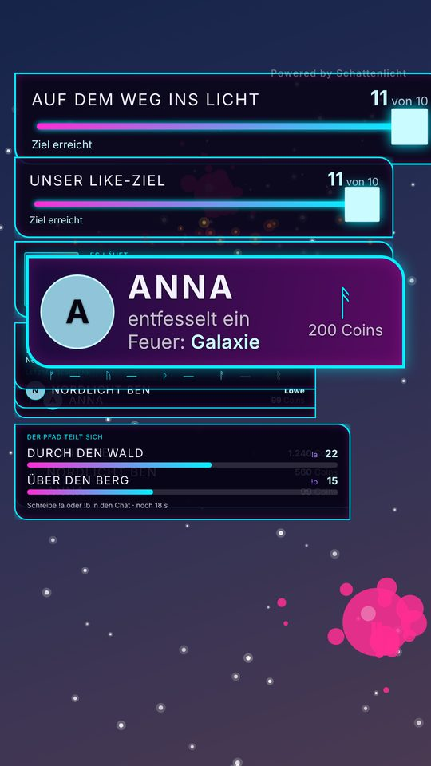
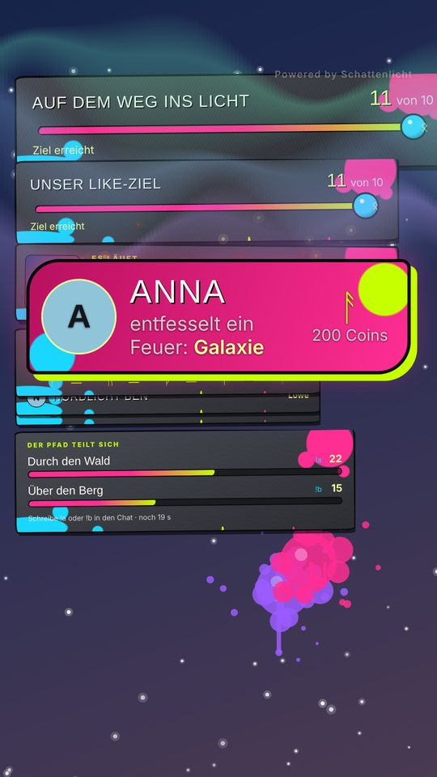
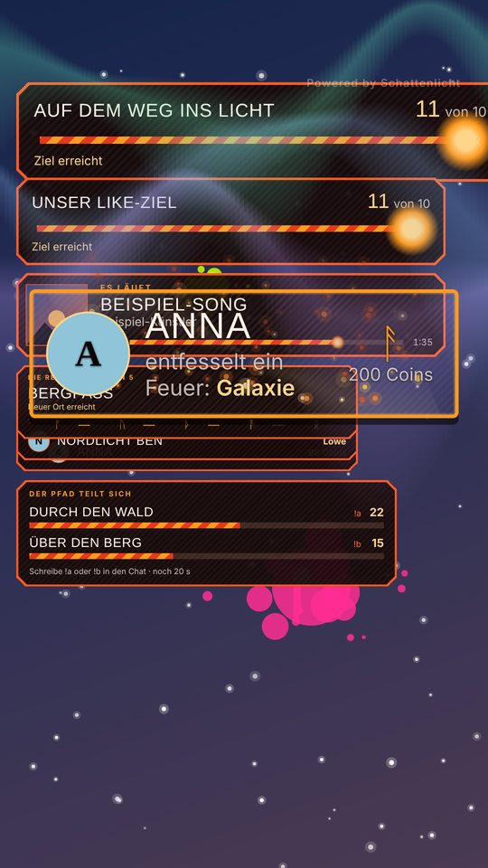
Alles in einem Regiepult, gebaut für 1080 × 1920.
Geschenke, Follows, Shares, Abos und Willkommen: gemeinsam oder in eigenen Boxen, mit Stufen nach Coin-Wert.
Follower- und Like-Ziele, Chat-Abstimmungen und Befehle, die deine Zuschauer selbst auslösen.
Blendet alles Nebensächliche aus und zeigt nur die Bühne, damit du dich beim Streamen auf das Wesentliche konzentrierst.
Sieben sind kostenlos, weitere Design-Pakete folgen. Pakete bringen Farben, Bilder und Atmosphäre mit, werden beim Import geprüft und enthalten keinen Programmcode. Eigene Stile speicherst du als Slots.
Jedes Ereignis kann eine Aktion in Streamer.bot auslösen, mit allen Daten als Argumente.
„Es läuft“-Anzeige für Spotify und wechselnde Info-Fenster für deine Kanal-Infos.
Optional: Stage meldet deinen Livegang in deinem Discord-Kanal. Standardmäßig aus, mit deinem eigenen Webhook.
Ein Einrichtungsassistent führt dich durch den Start. Bei Problemen hilft die Diagnose, und ein Backup sichert deine Einstellungen.
Läuft auf deinem PC. Kein Konto, keine Cloud, keine Datensammlung. Nur was du einschaltest, geht ins Internet: die Verbindung zu TikTok, optional Spotify, Discord und Updates. Updates, Stile und Pakete sind signiert und werden vor der Nutzung geprüft.
Eine kleine Auswahl. In Stage findest du alle Stile mit Vorschau unter „Stile entdecken“. Sieben Stile sind kostenlos. Die weiteren Design-Pakete sind noch nicht auf Ko-fi freigeschaltet und folgen mit dem öffentlichen Start.
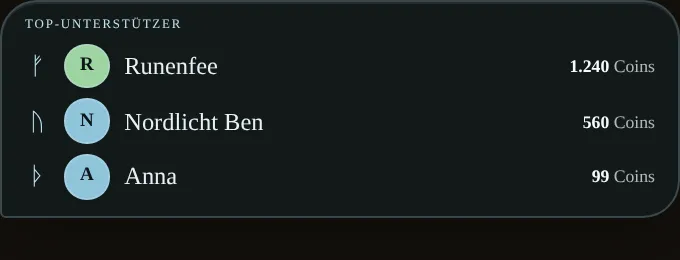
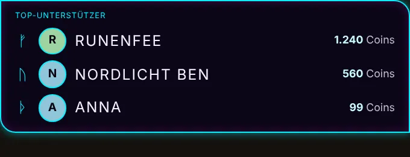
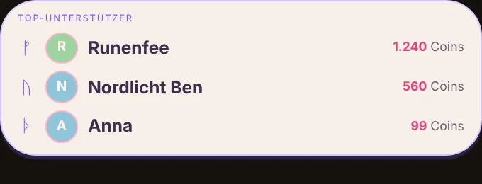
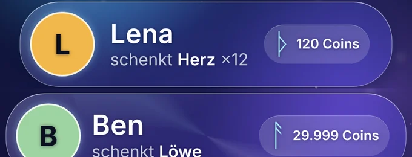
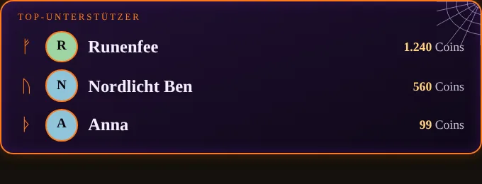
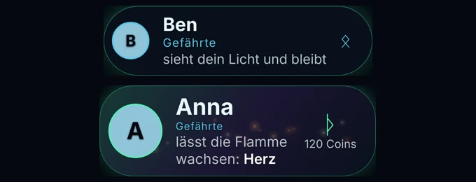
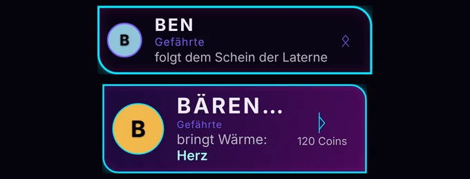
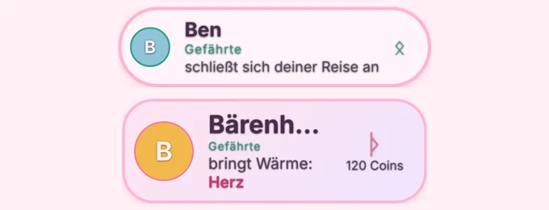
Die Übersicht zeigt deine Bühne live, mit Regie-Modus, Test-Alert und Stil-Wechsel. Elemente verschiebst und stellst du im Reiter „Overlays“ ein: Form, Farben, Texte und Links.
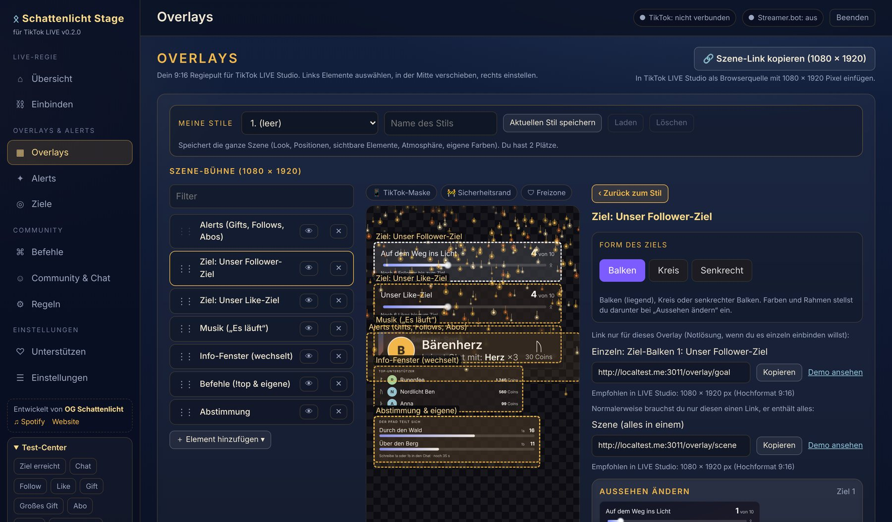
Beispielansicht mit Beispieldaten, kein echter Stream.
Der Assistent in Stage führt dich beim ersten Start selbst durch.
Stage ist kostenlos und entsteht neben meinem Alltag. Wenn du magst, hilfst du mit einem Kaffee, dass es weitergeht. Fragen und Ideen kannst du auch in unserer Community loswerden.